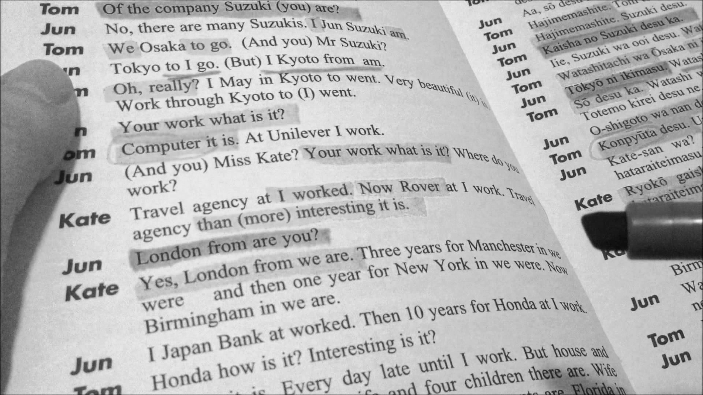
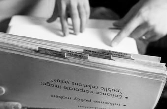
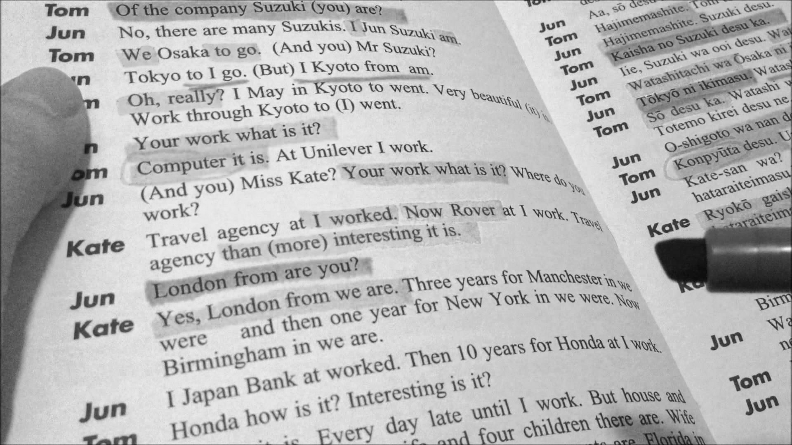
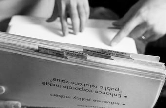
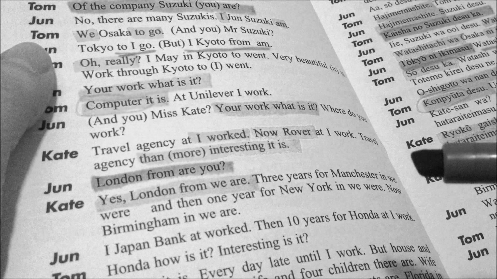
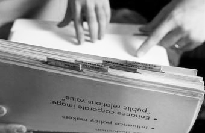
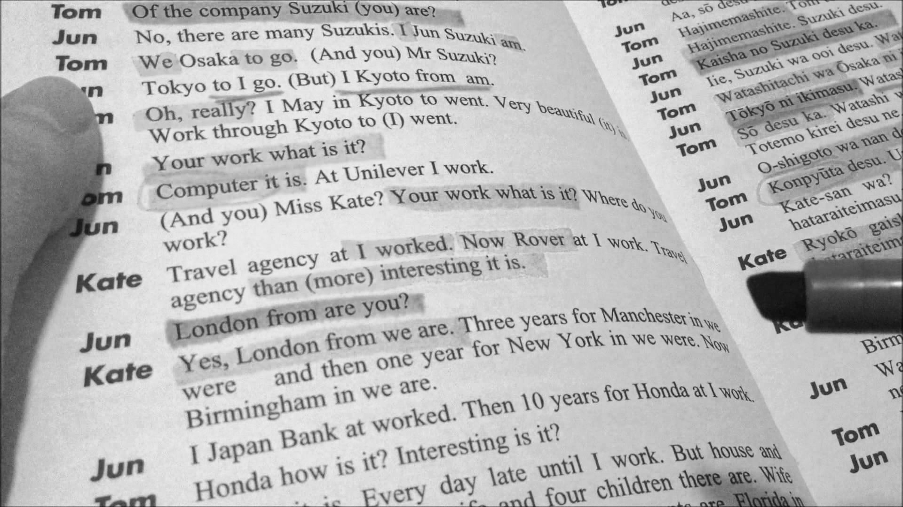
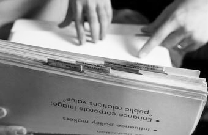

Save is the means of keeping items and pieces of information such as images or text that can be stored for personal use or future reference. Save is the means of keeping items and pieces of information such as images or text that can be stored for personal use or future reference. Save is the means of keeping items and pieces of information such as images or text that can be stored for personal use or future reference. Save is the means of keeping items and pieces of information such as images or text that can be stored for personal use or future reference. Save is the means of keeping items and pieces of information such as images or text that can be stored for personal use or future reference. Save is the means of keeping items and pieces of information such as images or text that can be stored for personal use or future reference. Save is the means of keeping items and pieces of information such as images or text that can be stored for personal use or future reference. Save is the means of keeping items and pieces of information such as images or text that can be stored for personal use or future reference. Save is the means of keeping items and pieces of information such as images or text that can be stored for personal use or future reference. Save is the means of keeping items and pieces of information such as images or text that can be stored for personal use or future reference. Save is the means of keeping items and pieces of information such as images or text that can be stored for personal use or future reference. Save is the means of keeping items and pieces of information such as images or text that can be stored for personal use or future reference. Save is the means of keeping items and pieces of information such as images or text that can be stored for personal use or future reference. Save is the means of keeping items and pieces of information such as images or text that can be stored for personal use or future reference. Save is the means of keeping items and pieces of information such as images or text that can be stored for personal use or future reference. Save is the means of keeping items and pieces of information such as images or text that can be stored for personal use or future reference. Save is the means of keeping items and pieces of information such as images or text that can be stored for personal use or future referenc Save is the means of keeping items and pieces of information such as images or text that can be stored for personal use or future reference. Save is the means of keeping items and pieces of information such as images or text that can be stored for personal use or future reference. Save is the means of keeping items and pieces of information such as images or text that can be stored for personal use or future reference.